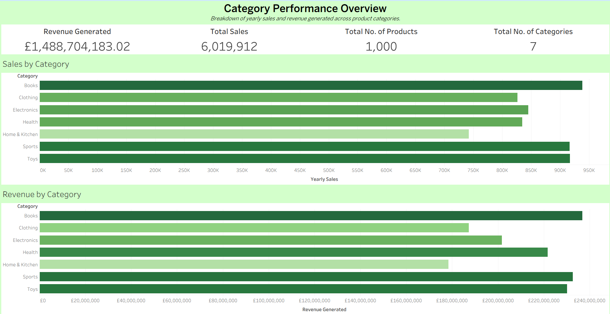
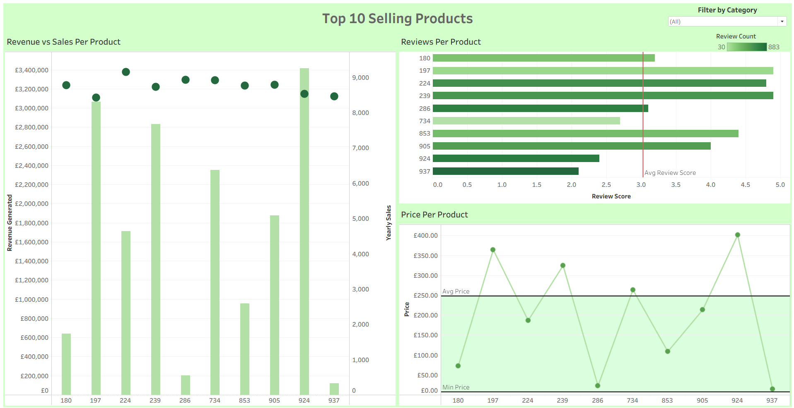

End-to-end e-commerce sales data project using SQLite, Excel, and Tableau
Product Overview
To start off my business and data analysis journey, I started with a 12-month e-commerce sales dataset from Kaggle. This was a relatively generic dataset, but I felt it was a good starting point due to the ambiguity of the information (products did not have names, months were labeled months 1 to 12 but there was no confirmation if this was Jan to Dec or a random order). I felt if I could somehow derive any sort of meaning from this, it would be a good idea of how well I would do in the real world.
I eventually arrived at the conclusion that I would derive 2 key dashboards that, in a hypothetical scenario, upper management or executive decision makers in the organization would want to see. This is purely based on my experience as a Business Operations Manager and someone who has spent a lot of time working in quite a variety of different fields.
Tools I Used
Excel – The data was in a CSV file, so naturally I had to read through it first before doing anything else to see if I could spot any discrepancies or any interesting patterns.
SQLite – After a quick manual scan, I imported the data to SQLite to perform some data manipulation and run some queries to get an idea of what the highest sales look like, what some of the lower performing categories are, and so on.
Tableau – This was my first time using Tableau and therefore this part took the longest time as I was learning through experience. I used Tableau to build charts and dashboards using the files I had exported from SQLite.
The Process
When I started this project, I was pretty lost on what I could actually do with this data due to the same reason that I wanted to start with it – it was pretty ambiguous. Sure, I could run random SQL queries on it all day long and get a bunch of information that may or may not matter. I could spend a lot of time building a bunch of random charts that would not make a difference in the business world. In fact, I actually did do both these things.
I found out a bunch of information using SQL queries that I picked up during my time solving the SQL 50 on Leetcode and as I ran more and more queries, I realized that there are insights one could actually derive from data that looks meaningless at first. One could establish the top selling categories, the top selling products, what makes these the top sellers and so on. Of course, there would be some assumptions being made in this project based on my experience and real-world statistics.
Originally, my Tableau project actually consisted of 10 worksheets with a variety of different charts and graphs, but as I learned to think more and more of how I would actually present something like this in a real-world scenario, I realized that there are details that high level management would really want to focus on, and details that do not need to be a priority unless asked for specifically. So I really dived deep into talking to myself as I was making this project and acting like I was presenting in front of a real management committee.
That’s how I ended up with the end product: 6 total worksheets divided into 2 different dashboards. One to summarize what categories were working and how much money we made, and the other to show what the best selling products were (overall and per each category), and try to find what made these the top sellers (was it their price or that they were well reviewed)? Identifying this could help push products, increase pricing on certain products to increase revenue, identify weak points and see if I could even identify any interesting insights from this data. And I did.
Detailed Insights I Gained
Products 286 & 937 — Both are top sellers but with super low price points and, as a result, very low revenue. Product 937 even has a terrible review score. So why are they selling so well? Are we losing potential customers by keeping products with poor reputation just because they move volume? Something to seriously question about long-term brand health here.
Products 197 & 924 — These sell well and have prices way above the average. It’s tempting to push prices higher to rake in more revenue, but without cost info, that’s a gamble. Still, high price + high sales = solid profit potential if costs are in check.
Review Scores vs Sales — Surprisingly, there’s almost zero correlation between reviews and sales. This suggests either reviews don’t influence buying decisions here or something else is driving sales (like price, category, or seasonality). Worth investigating deeper with customer behavior data.
Category Winners & Losers — Categories like Electronics and Home Decor dominate sales and revenue. But some low-price categories rake in lots of units without much revenue impact. The store should prioritize resources and marketing spend towards higher-margin categories instead of volume-only plays.
Seasonality — The dataset only has sales_1 to sales_12 with no actual months, which doesn’t allow for any real meaningful seasonal analysis; however, I could easily assume that sales would be higher around Christmas and such holidays, but it again depends on which country the data is coming from and so on and so forth. I had originally pivoted the month axes into a format where I could see the patterns over the course of a year, but reverted back due to the lack of information. In better cases though, I would know what to do, and I feel that was a key learning point here as well.
Product 306 — This is a very curious product. It is one of the best sellers and revenue generators, and it’s a book priced at 488 with an extremely good review score and review count. I’d love to know what kind of book this is and what drives its success.
Home and Kitchen Category — Only two products in this category’s top sellers have above-average review scores; the rest have really bad ratings. It’s also the worst-performing category overall. These factors might be related and could require some serious action to improve.
Sports Category — This is the second highest revenue generator. Only three products have below-average review scores, and only four products are priced below average in their top 10. This category could potentially be expanded with a few more similar products to boost revenue, as sports products tend to be more expensive but sell well here. We should capitalize on this strength.
Books Category — Generally, books show high sales volume, but product 306 carries most of the revenue. Maybe acquiring or promoting a couple more products similar to 306 could improve overall category revenue.
Lessons I Learned
Importing CSVs into SQLite and cleaning raw data: got comfortable quickly but learned the first row isn't headers by default and had to fix that manually.
Altering tables and creating views: Learned the difference and when to create a virtual view vs changing the table schema permanently. For example, I added yearly month sales per product as a new column in the original table, but I made a new view for grouping total sales per category.
Building dual-axis charts in Tableau: This was a pain. Had to synchronize axes, fix overlapping labels, and deal with color conflicts across charts. Very good learning experience though.
Established relationships in Tableau to avoid heavy joins and ensure filters work smoothly across worksheets.
Manipulated axes to remove nonsensical negative sales values — no such thing as negative stock (unless you preorder, which isn’t in this data).
Learned to create new calculated fields like revenue (sales × price) to give context beyond just volume.
Used highlight actions in Tableau to connect charts interactively. This was a real game changer for dashboard usability, even though it’s very basic, I believe it would be a key item in corporate presentations.
Learned how to use filtering across dashboards based on a single dropdown/category selection. Saved time and increased usability.
Discovered pivoting data is essential for monthly trends analysis, even if I didn’t fully implement it here.
What Would Have Made This Project Better
Cost Data: Without product cost or acquisition price, I can only guess at profit. Revenue numbers are nice but don’t tell the whole story.
Customer Data: No info on repeat vs one-time buyers means I can’t assess customer loyalty or lifetime value.
Actual Dates for Sales: The months are generic sales_1 to sales_12, so I can’t do real seasonal or trend analysis. That’s a big limitation.
Product Names: Products are just labeled Product + ID. That sucks for deriving anything specific — real names would’ve helped with brand/category intuition.
Marketing & Promo Data: No idea if low sales products are due to pricing issues, lack of promotion, or being brand new. Context like this would massively improve recommendations.
The Final Product
Two dashboards that actually work and tell a story:
Category Overview – Gives the big picture: revenue and sales by category. And an executive overview.

Dashboard 1: Overview of Sales & Revenue by Category
Top 10 Selling Products – Shows the top 10 selling products with their reviews and price points.

Dashboard 2: Detailed Top 10 Products Summary
Both have filters and interactivity that help stakeholders get fast answers.
Final Thoughts
This project took me about 3 to 4 days overall to complete, with the finalization of the document and customizing my portfolio website taking me another couple of days. As this is my first project, I was learning Tableau alongside actually working with it, so I am quite excited to see where this leads next. I really enjoyed figuring out insights from the data, cleaning it, manipulating it and just overall working in this scenario, even if it was only hypothetical.
If you’ve reached this point in the document, I truly appreciate your time! I would love to connect with you on my LinkedIn (right below)!